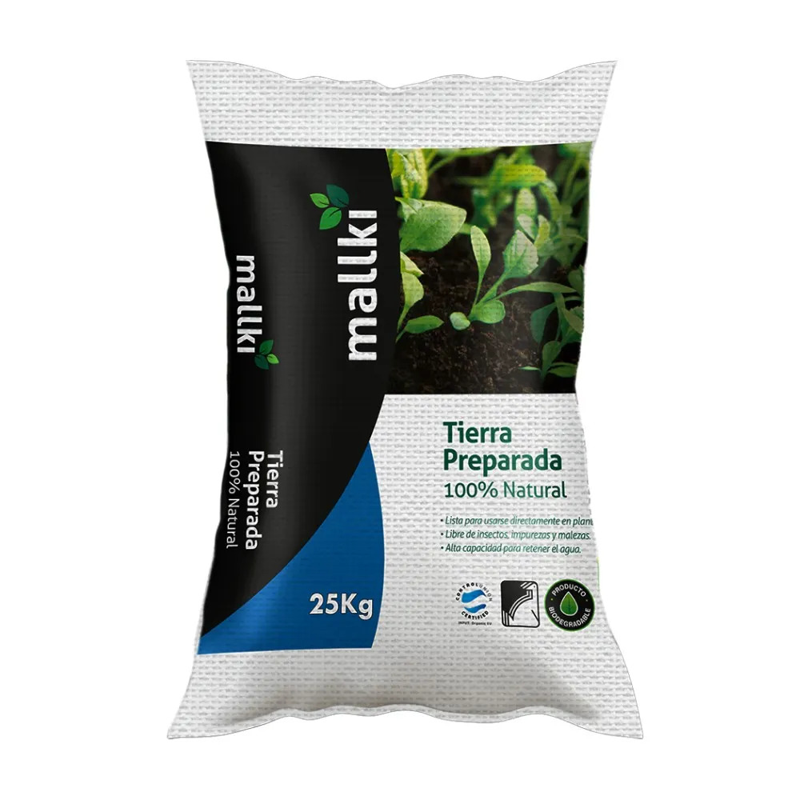

Tierra preparada para plantas

Sustrato que puede combinar tierra, materia orgánica y otros componentes para favorecer la retención de agua y la aireación de las raíces. La composición adecuada depende de la especie que se desea cultivar.